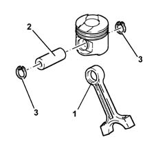
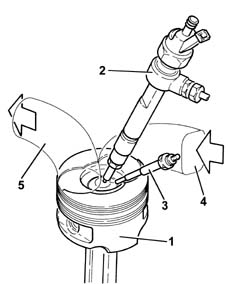

Introduction - PISTONS AND CONNECTING RODS
- Path
- Descriptions > 10 ENGINE UNIT > 1028 PISTONS AND CONNECTING RODS > Introduction - PISTONS AND CONNECTING RODS
- Kind
- system description
- Applies to
- all engines; all production periods
- Interactive page
- https://sloeber94.github.io/elrnDB-fMltpl/en/#/2892426
Applies to: engines: 1.9 JTD 8V; all production periods
CONNECTING RODS
The connecting rods are made from hardended and tempered steel, with a copper bush (1) fitted for matching with the gudgeon pin (2).
The floating gudgeon pins are secured by two circlips (3) seated in specific grooves in the piston skirts.

PISTONS
The light aluminium-silicon alloy pistons with autothermic inserts are graded in three sizes.
The "OMEGA" combustion chamber is located in the piston crown to improve combustion.
Two copper alloy bushes assist the matching with the gudgeon pin.

1, Piston 2, Injector 3, Heater plug 4, Air inlet 5, Exhuast gas outlet